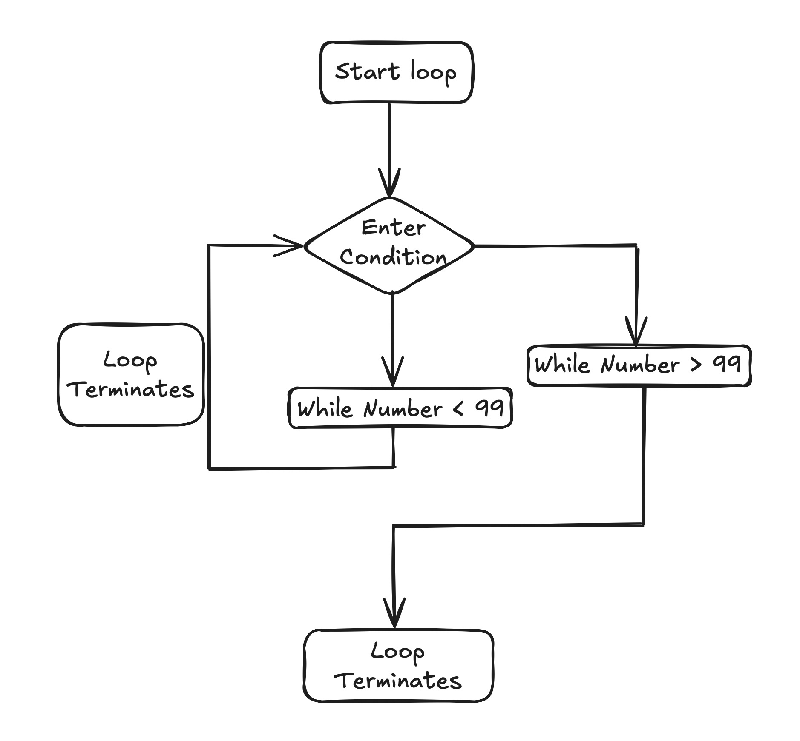
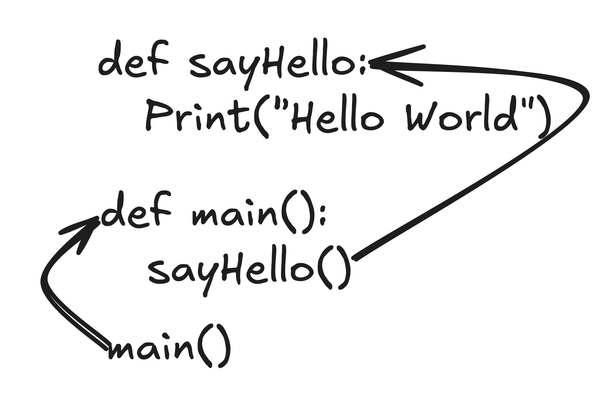

Hey there, future coder!
Welcome to Python Basics—your adventure into the world of programming. If you've ever wondered how games are made, how apps work, or how robots follow instructions, you're about to learn the secret behind it all: code—and Python is one of the best places to start.
Python is like learning how to talk to computers using simple, friendly instructions. It's powerful (big companies like Google and Netflix use it!), but also super easy to pick up—even if you’ve never written a single line of code before.
In this course, we’re not just going to learn Python—we’re going to have fun with it. You’ll write your first program, make decisions with if statements, repeat actions with loops, and build smart chunks of code called functions. Along the way, we’ll explore the magical world of data structures like lists, and tuples. You’ll even learn how to handle mistakes (yes, computers make them too!) and build your very own objects.
This isn’t just a lesson—it’s your first step to becoming a creator, a builder, a problem-solver. Whether you want to build the next big app or just learn a cool new skill, you’re in the right place.
So grab your keyboard, bring your curiosity, and let’s start coding!
Imagine you have a super cool toy car, but not just any car. This one listens when you talk to it! You can say things like Go Left, Go Right, or Stop, and the car actually does it. Pretty awesome, right?
Now imagine you want to talk to your computer in the same way—to give it instructions and have it do things for you. That’s where Python comes in. Python is a special language that lets you "talk" to computers using simple words and commands.
Instead of shouting commands at your toy car, with Python you type them. For example, you can write something like print("Hello, world!") and the computer will show the words you told it to. It's like being the boss of your own robot, and Python is the way you give your robot instructions.
So when you learn Python, you're really learning how to control computers—just like your toy car—but with even more superpowers!
Okay, let’s say you just got your toy car out of the box and you want to make sure it hears you. What’s the first thing you might say? Maybe just a friendly Hello, right?
In the world of Python, we do the same thing! The very first program most people write is called "Hello, World". It’s like waving at your computer and making sure it can hear you when you speak Python.
To do that, you just write:
Print(Hello , World)Results: Hello , WorldThe word print is your way of telling the computer, “Hey, say this out loud on the screen.” So when you run this code, your computer responds by showing: Hello, world!
It’s kind of like telling your toy car, Say Hello, and it beeps back at you. This tiny program is your first conversation with the computer—and it's just the beginning!
Now that your computer is listening, it’s time to teach it how to think and make decisions—just like you do!
First up: if/else. This is how Python makes choices. Imagine you're deciding what to wear. You might think: if it’s raining, wear a raincoat. Else, wear a t-shirt. That’s exactly how computers use if/else—to pick what to do based on what’s true.
Now look at the diagram above. Here's what’s happening, step by step:
number = 10)."The number is positive".Number < 0?"The number is negative".number == 0 and print "The number is zero". number = 10
if number > 0:
print(" The number is positive")
elif number < 0:
print("The number is negative")
elif number == 0:
print("The number is zero")Since number = 10 is greater than 0, Python follows the left path in the flowchart and prints:
The number is positiveNext are loops. These are for doing something over and over. Like brushing your teeth—back and forth, again and again. In Python, you can use a loop to tell the computer: “Repeat this task 5 times” and it’ll do it without getting tired!
Now look at the diagram above. Here's what’s happening, step by step:
i is set to 0, which is the first number in the range(0, 99).i is still less than 99, so it goes into the loop.i reaches 99), the loop ends and the program goes to Stop.i < 99, repeating the process.i reaches 99, the condition fails, and the program exits the loop and stops.for i in range(0, 99):
print(f"{i}", end=', ')Since the loop starts from i = 0 and continues until i < 99, Python prints each number from 0 up to 98, separated by commas, all on the same line:
0, 1, 2, 3, 4, 5, 6, 7, 8, 9, 10, ..., 97, 98, And finally, we have functions. Think of them like little machines you build. You give them a name and tell them what to do. Then anytime you need that task done, you just call the function! It’s like saying, “Hey, do that thing we talked about.” It saves you from writing the same code again and again.
Now look at the diagram above. Here's what’s happening, step by step:
main() function. It’s like the director of the show.main(), we make a call to another function: sayHello().sayHello() function and runs whatever is inside it. In this case, it prints: "Hello, World".sayHello() finishes, the program returns to main().main() is done, the program ends. That’s a wrap!def sayHello():
print("Hello, World")
def main():
sayHello()
main()
When we run the program, Python starts with main(), which then calls sayHello(). Inside that function, it prints:
Hello, WorldSimple, clear, and clean! That's the magic of functions — they let you organize your code and run tasks step by step.
With if/else, loops, and functions, you can make your programs smart, repeatable, and super organized. You’re not just coding anymore—you’re starting to think like a programmer!
Imagine you’re building a super cool robot. But instead of building every single part from scratch—like arms, wheels, or a camera—you grab ready-made parts from a toolbox. That’s what modules are in Python: toolboxes full of awesome features that you can reuse!
In Python, when you want to use one of those toolboxes, you just say import. For example, if you want to do some quick math magic, you can import the math module like this:
import mathThen you can use it to do cool stuff, like:
print(math.sqrt(25)) # This will print 5.0 (square root of 25!)Think of import like saying: “Hey Python, bring me the math toolbox—I’ve got numbers to crunch!”
There are tons of modules you can import—some are built into Python, and others you can download when you need them. They help you build bigger, cooler projects without having to reinvent the wheel every time. 🚀
Alright, now that you've got your tools and you're ready to organize your stuff, let’s talk about two of the most useful ways to store things in Python: Lists and Tuples!
Imagine you have a bunch of toys—action figures, cars, and dolls—and you need a place to keep them all. A list is like a toy box where you can put all your toys in any order. You can even take toys out, add new ones, or move them around whenever you want!
In Python, a list looks like this:
toys = ["action figure", "car", "doll"]You can even do things like:
toys.append("robot") # Add a robot to the list!Now, a tuple is a little different. It’s like a toy display case, where everything is carefully arranged. You can see the toys, but once they’re in there, they can’t be moved or changed. It’s like a "no touch" rule!
In Python, a tuple looks like this:
toys = ("action figure", "car", "doll")So, to sum it up: use a list when you need to change things around, and use a tuple when you want things to stay exactly the same.
Both are great ways to keep your stuff organized in Python—whether it’s toys, numbers, or even names of your favorite characters!
Sometimes, even the best plans go wrong! Imagine you’re making a peanut butter sandwich, and suddenly you realize—you’re out of peanut butter! That’s when you get an “exception”—a problem that stops everything from going as planned.
In Python, exceptions are like those unexpected problems that happen when your code tries to do something that isn’t possible. For example, you might try to divide by zero or open a file that doesn’t exist. When that happens, Python throws an exception, like a big red flag saying “Hey, something went wrong!”
But don’t worry, we can handle exceptions and tell Python what to do when things go wrong. That’s where try and except come in!
Here’s how it works: You try to do something in your program, and if it causes an error, Python will "catch" it with the except part. It's like saying: “Hey, if the peanut butter jar is empty, just get the jelly and let’s keep going!”
def safe_print_integer():
number = "Some String"
try:
print("{:d}".format(number))
except (ValueError, TypeError):
print("Must be a number")
safe_print_integer()This code is all about safely trying something that might go wrong — and catching the error before it crashes the program.
Let’s walk through it:
number = "Some String" – We're giving Python a value that is not a number (it's a string).try: – We’re about to try something risky: formatting the value as a number using "{:d}".format()."Some String" is not an integer, so Python raises an error — either a ValueError or TypeError.except (ValueError, TypeError): – This catches the error and gracefully handles it by printing a friendly message.Because "Some String" isn’t a valid integer, Python raises an error — but our try/except block catches it and prints:
Must be a numberThe program didn’t crash. We caught the error with except. Clean, safe, and user-friendly!
Exceptions help you handle problems without giving up on your program. They let you be prepared for the unexpected and keep things running smoothly—even when things don’t go according to plan!
And just like that, you’ve made it through the basics of Python! From talking to computers with simple commands, to organizing your data, and handling any hiccups along the way with exceptions, you've learned some key building blocks of programming.
But here’s the best part: You’re just getting started! With Python, you’ve unlocked the power to create, solve problems, and make things that didn’t exist before. Whether you want to build websites, games, or robots, Python will be your trusty sidekick on that journey.
Remember, programming is all about learning through practice, experimenting, and having fun along the way. Keep playing with your code, try new things, and don't be afraid to make mistakes—because that’s how you’ll grow.
So, what’s next? Keep exploring, keep coding, and most importantly—keep being curious! The world of Python (and programming in general) is vast and exciting, and you're on the path to becoming a true coding wizard!
Thanks for joining this adventure! Your coding journey has just begun—let’s see where Python takes you next!